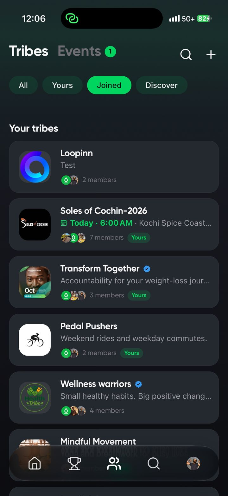
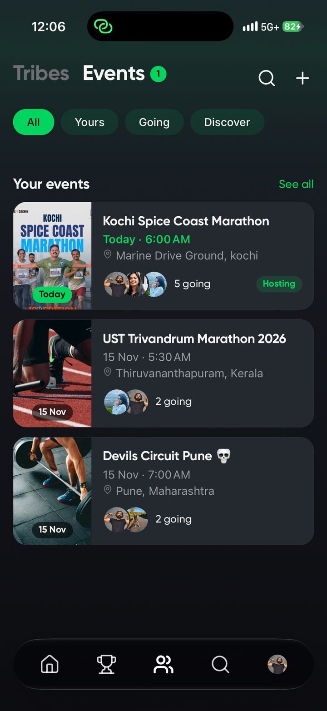

Tribes and Events: A Home for Your Run Club, Gym or Crew
The app is only half of it. The other half is the five people who notice when you skip a Tuesday. A tribe in Sweats gives your run club, your gym or your office floor one place to train together: its own feed, its own events, its own challenges and its own leaderboard.
Post a Saturday trail run, see who’s in, and keep score all week, without another group chat.
Start a tribe for your crew today.
Get Sweats free
What a tribe gets
- A feed of its own. Members’ workouts, route maps and posts in one place.
- Events. Sessions with a time, a place and a cover photo, with RSVPs.
- Challenges. Run a step, distance, minutes or calorie challenge for the whole tribe. How challenges work.
- A leaderboard. Per-tribe rankings, alongside the global weekly leagues.
Sunday, 6am, the usual spot: events
Create a session with a time, a place and a cover photo, and watch the RSVPs come in. Browse what’s happening near you in Discover, and your profile keeps a rail of everything you’re hosting and everything you’re going to. The first event you join unlocks a badge.

Three ways to find your people
- Scan a QR code. Meet someone at a run and connect on the spot.
- Sync your contacts. See which friends are already training on Sweats.
- Nearby Alerts. Get a nudge when another member is training within about a kilometre of you. Foreground only, off in one tap, and never shown as a live map of you.
Messages are request-gated, so strangers can’t pile into your inbox.
Public tribes and Discover
Public tribes show up in Discover so people nearby, or into the same sport, can find you. On Sweats Pro you can also request a verification badge for your tribe.
Starting a run club?
We wrote a practical guide to starting a run club in India, from picking a route to keeping people coming back, and one for new members on what to expect at your first run club.
Free and Pro
Joining tribes and events is free, with no limit. On the free plan you can create one tribe with up to 10 members. Sweats Pro unlocks unlimited tribes of up to 1,000 members each, plus a verification badge request for you and your tribe.
Bring your crew. Keep score together.
Get Sweats freeTribes and events FAQ
Is it free to start a tribe?
Yes. On the free plan you can create one tribe with up to 10 members and join as many tribes as you like. Sweats Pro lets you create unlimited tribes of up to 1,000 members each.
Can new people find my tribe?
Public tribes show up in Discover, so people near you or into the same sport can find and join them.
Do Nearby Alerts show my location?
No. Nearby Alerts never show your position to anyone. They only tell another member that someone is training within about a kilometre, they work while the app is open, and you can turn them off with one tap.
What happens if someone harasses me or posts something inappropriate?
Every profile, post, and message thread can be reported or blocked directly in the app. We review reports and act on violations of our Terms of Service.
Which phones does Sweats work on?
Sweats is on the App Store for iPhone now and reads activity from Apple Health. On Android? Be one of our beta testers: grab the APK and help shape Sweats before it hits Google Play.